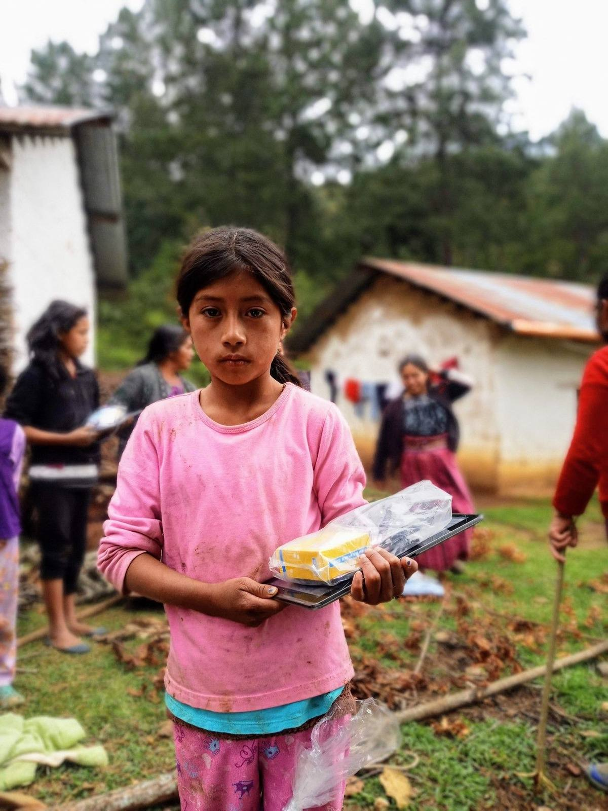
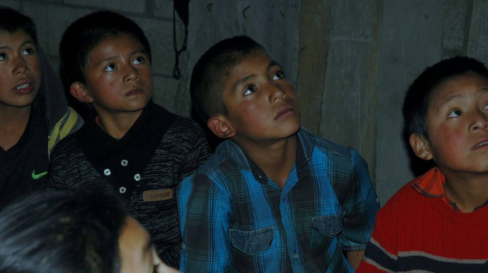

Lo que tu apoyo hace posible
Medimos lo que más importa: que cada niño pase al siguiente nivel.
2026 en cifras
Club Extra, becas, Mentores y voluntariado en ocho comunidades del departamento de Totonicapán.
Lo que 2026 nos deja
Los resultados que más nos enorgullecen son los que muestran que los niños siguen avanzando, y que sus familias avanzan con ellos.
- 7 de 7 becados que terminaron sexto primaria pasaron a básico.
- 10 de 10 becados que terminaron tercero básico pasaron a diversificado.
- 6 de 7 graduados de diversificado llegaron a la universidad.
- 3 comunidades nuevas: Nimasac, Paraje Los Itzep y San Bartolo Aguas Calientes.
Lo que viene
Nuevos centros de Club Extra
Llevar Club Extra a más comunidades de Totonicapán.
Un equipo para cada niño
Avanzar hacia la meta de que cada niño cuente con su propio equipo de trabajo.
Primeros donantes locales
Sumar el apoyo de personas y empresas guatemaltecas con la campaña «Nadie Llega Solo».
Cuatro años de crecimiento
De 2023 a 2026, el promedio de niños pasó de 155 a 332 y las familias, de 98 a 285. Las comunidades crecieron de 4 a 8. No todo fue crecimiento: tuvimos menos becados de colegio que en 2025, y lo decimos con la misma claridad.
| Indicador | 2023 | 2024 | 2025 | 2026 | Cambio |
|---|---|---|---|---|---|
| Familias | 98 | 110 | 147 | 285 | +94 % |
| Niños en promedio | 155 | 220 | 296 | 332 | +12 % |
| Comunidades atendidas | 4 | 5 | 5 | 8 | +60 % |
| Becados de colegio | 82 | 81 | 78 | 64 | −18 % |
| Becados de diversificado | 5 | 4 | 14 | 11 | −21 % |
| Becados de universidad | 5 | 5 | 4 | 4 | 0 % |
| Graduados de tercero básico | 3 | 10 | 11 | 10 | −9 % |
| Graduados de diversificado | 0 | 0 | 1 | 7 | +600 % |
| Voluntarios | 6 | 4 | 11 | 11 | 0 % |
| Facilitadores | 5 | 5 | 7 | 6 | −14 % |
| Mentores | 9 | 23 | 24 | 22 | −8 % |
| Equipos entregados | 186 | 203 | 240 | 232 | −3 % |
| Antenas de internet | 0 | 1 | 2 | 2 | 0 % |
| Beneficiarios directos | — | 50 | 84 | 274 | +226 % |
Cambio de 2025 a 2026. En 2026, «niños en promedio» incluye las semanas sin Club Extra; «becados de colegio» comprende preprimaria, primaria y básico; «Mentores» corresponde a inscritos (en años anteriores, a mentores acompañados). En 2023 aún no se registraban beneficiarios.
De 4 comunidades en 2023 a 8 en 2026
Todas están en el departamento de Totonicapán. En 2026 se sumaron Nimasac, Paraje Los Itzep y San Bartolo Aguas Calientes. 164 de las 285 familias pertenecen a esos sitios nuevos.
| Comunidad | Municipio |
|---|---|
| Pueblo Viejo | San Bartolo Aguas Calientes |
| Salitre de Conejo | San Bartolo Aguas Calientes |
| Patulup | San Bartolo Aguas Calientes |
| Paraje Los Itzep (nueva) | San Bartolo Aguas Calientes |
| San Bartolo Aguas Calientes (nueva) | San Bartolo Aguas Calientes |
| Chuixchimal | Totonicapán |
| San Cristóbal Totonicapán | Totonicapán |
| Nimasac (nueva) | San Andrés Xecul |

Nuestra contribución a los Objetivos de Desarrollo Sostenible
Fin de la pobreza
Buscamos romper el ciclo de la pobreza con educación. En 2026 acompañamos a 285 familias rurales.
Educación de calidad
80 becados de preprimaria a la universidad. Los 10 que terminaron tercero básico pasaron a diversificado.
Trabajo decente
14 jóvenes completaron las 16 semanas de retos empresariales de Mentores.
Reducción de las desigualdades
Totonicapán tiene baja cobertura universitaria. Aun así, 6 de 7 graduados llegaron a la universidad.
Alianzas
Trabajamos con los colegios Juan Wesley y Esmirna, donde estudian 64 de nuestros becados.
El contenido de este sitio no ha sido aprobado por las Naciones Unidas y no refleja las opiniones de las Naciones Unidas, de sus funcionarios ni de sus Estados miembros.
Tu donación en acción
Cada aporte se destina a los programas educativos: becas, tecnología, mentoría y acompañamiento a las familias. Los aportes se asignan al área de mayor necesidad dentro de los programas.
- Registros por comunidad y por estudiante, revisados periódicamente.
- Becas otorgadas mediante procesos de selección responsables y transparentes.
- Sin discriminación por raza, sexo, color, religión u origen étnico.
- Organización 501(c)(3) registrada en Estados Unidos; las donaciones de contribuyentes estadounidenses son deducibles según la ley.

Hay niños esperando que alguien crea en ellos
Conoce el impacto de tu apoyo, dona hoy o súmate como voluntario. Cada decisión cuenta.